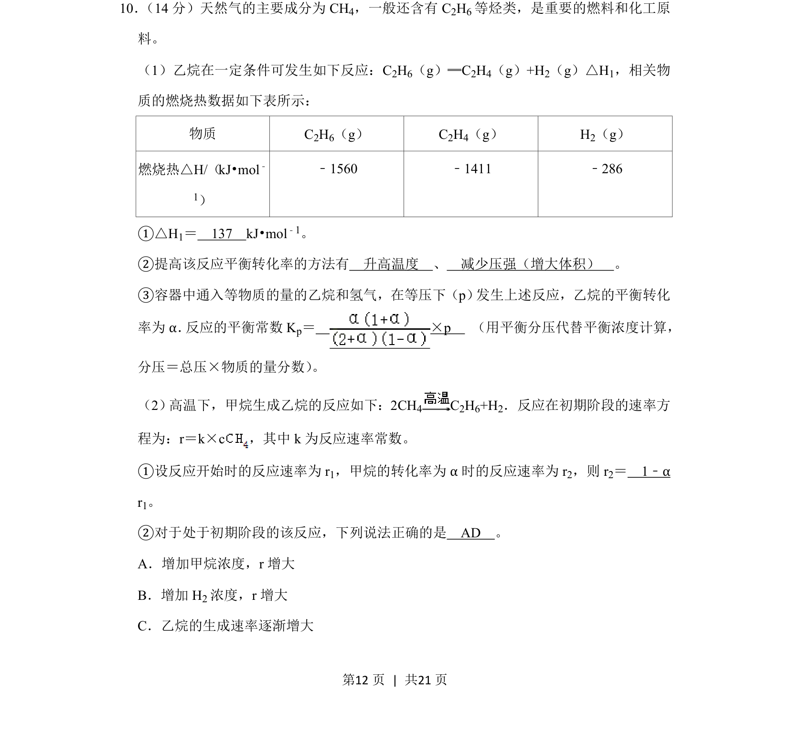
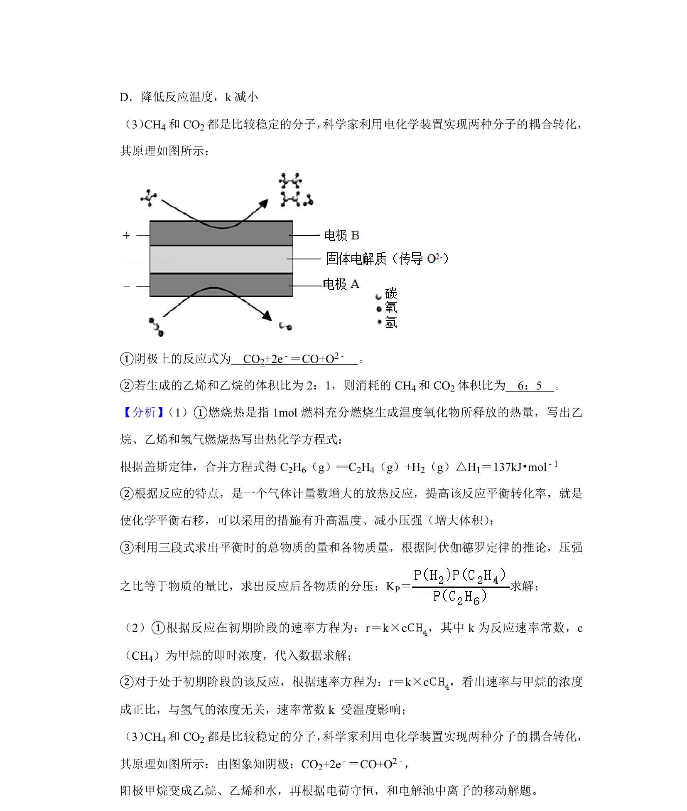
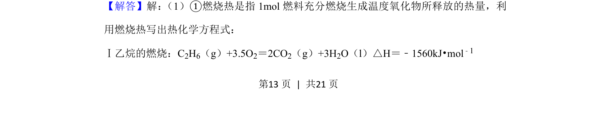
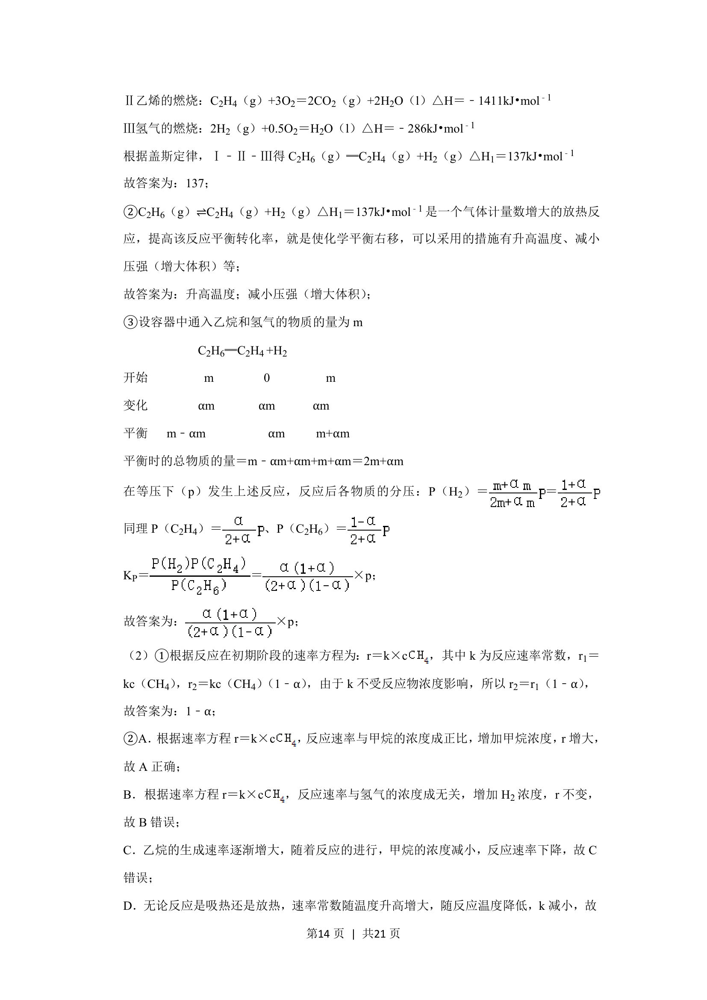
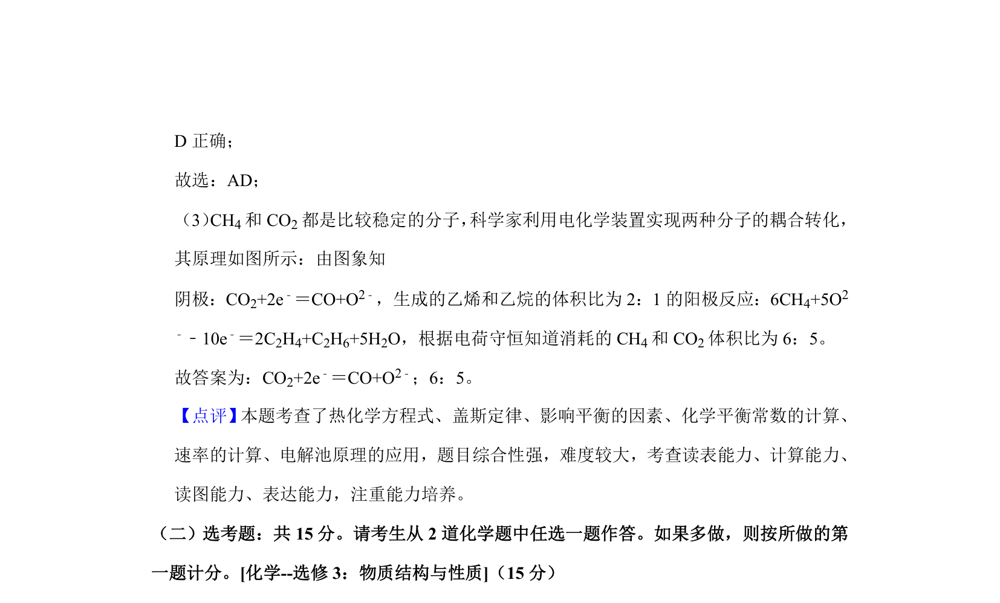

考点：燃烧热 反应热 化学平衡 平衡常数


利用燃烧热计算反应热，分析化学平衡转化率及平衡常数，结合速率方程进行转化率相关计算。



📄 原 PDF 第 12 页：
素材/真题/吉林/2008-2024·（吉林）化学高考真题/2020年高考化学试卷（新课标Ⅱ）（解析卷）.pdf
10． （14分）天然气的主要成分为CH4，一般还含有C 2H6等烃类，是重要的燃料和化工原 料。 （1）乙烷在一定条件可发生如下反应：C2H6（g）═C2H4（g）+H2（g）△H1，相关物 质的燃烧热数据如下表所示： 物质 C2H6（g） C2H4（g） H2（g） 燃烧热△H/（kJ•mol﹣ 1） ﹣1560 ﹣1411 ﹣286 ①△H1＝ 137 kJ•mol﹣1。 ②提高该反应平衡转化率的方法有 升高温度 、 减少压强（增大体积） 。 ③容器中通入等物质的量的乙烷和氢气，在等压下（p） 发生上述反应，乙烷的平衡转化 率为α． 反应的平衡常数Kp＝ ×p （用平衡分压代替平衡浓度计算， 分压＝总压×物质的量分数） 。 （2） 高温下，甲烷生成乙烷的反应如下：2CH4 C2H6+H2．反应在初期阶段的速率方 程为：r＝k×c，其中k为反应速率常数。 ①设反应开始时的反应速率为r 1，甲烷的转化率为α时的反应速率为r 2，则r 2＝ 1﹣α r1。 ②对于处于初期阶段的该反应，下列说法正确的是 AD 。 A．增加甲烷浓度，r增大 B．增加H 2浓度，r增大 C．乙烷的生成速率逐渐增大